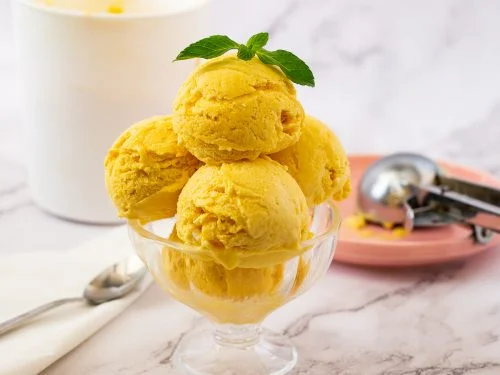

Mango Icecream Recipe

Summer's two greatest gift - Ice creams and Mangoes. Combine them and what you get is nothing less than a summer blockbuster! This easy no-churn recipe is super easy to do at home!
Ingredients
- Nestlé MILKMAID : 400 grams
- Ripe Mango : 3
- Fresh Cream : 300 ml
Recipe
- In a bowl, combine Nestlé MILKMAID, fresh cream and mango puree. Whisk until the mixture thickens. Set it in freezer till half set. Remove and whisk again until smooth. Doing so will help keep the texture of the ice cream soft and creamy while it sets.
- Return to freezer and set completely. Serve chilled.